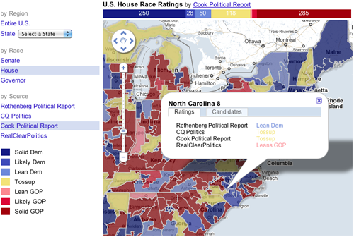

©2010 Google -
Code Home -
Terms of Service -
Privacy Policy -
Site Directory
Google Code offered in:
English -
Español -
日本語 -
한국어 -
Português -
Pусский -
中文(简体) -
中文(繁體)
Maps Javascript API V3
Maps Javascript API V2
(Deprecated API)
Maps API for Flash
Maps Data API
(Deprecated API)
Static Maps API
Earth API
-
Local Search API
(Deprecated API)
Includes enterprise licensing and support
Election Ratings and Spatial Data with Fusion Tables
Josh Livni and Kathryn Hurley, Google Geo APIs Team
September 2010
September 2010
This article covers some of the map styling and data feed aggregation techniques that were used to build the 2010 Election Ratings gadget, and some general concepts around visualizing complex datasets that change over time.
Overview
This map application visualizes data based on both State and County boundaries, and each polygon must be rendered according to a set of attributes that change daily. Developers who are familiar with displaying lots of data in Maps will notice that in this case the states and districts are not being rendered as vectors on the client, but as tiled image overlays. We made this choice because we knew the number and complexity of polygons would be greater than most browsers can render responsively. This is a common problem many developers face, and for this project we used a relatively new way of storing and styling complex geographic data for display in maps: Fusion Tables.
Fusion Tables provides access to its underlying data using the FusionTablesLayer in the Google Maps Javascript V3 API. You can use an SQL-like syntax to query for a subset of the data and then display the results on a map. The process is quick and easy to implement.
Aggregating daily data feeds
Before we could style or render the State and County polygons, we needed to acquire the attribute data that would be joined to the polygons and used to color each one appropriately. In this project, we had multiple disparate XML feeds we needed to parse, upload to Fusion Tables, and check for updates daily.
To check for daily updates of the election ratings, we set up App Engine cron jobs to retrieve the data from each feed and compare that data to what was stored in Fusion Tables. Data was updated in Fusion Tables if the information in the table no longer matched the data in the feed. To keep our code simple, we used the Placemat library to access the Fusion Tables API, and our workflow (minus the xml parsing) followed these 3 steps:
1. Authenticate to FT
auth_uri = 'https://www.google.com/accounts/ClientLogin'
authreq_data = urllib.urlencode({
'Email': username,
'Passwd': pw,
'service': 'fusiontables',
'accountType': 'HOSTED_OR_GOOGLE'})
auth_req = urllib2.Request(auth_uri, data=authreq_data)
auth_resp = urllib2.urlopen(auth_req)
auth_resp_body = auth_resp.read()
auth_resp_dict = dict(x.split('=') for x in auth_resp_body.split('\n') if x)
authtoken = auth_resp_dict['Auth']
2. Retrieve data in FT
encoded_query_params = urllib.urlencode({'sql': "SELECT rowid,rating,color
FROM %d" % (tableid)})
path = "http://www.google.com/fusiontables/api/query?%s" %
(encoded_query_params)
headers = {
'Authorization': 'GoogleLogin auth=%s' % (authtoken),
}
serv_req = urllib2.Request(path, '', headers)
serv_resp = urllib2.urlopen(serv_req)
ft_data = serv_resp.read()
3. Update Fusion Tables
path = 'http://www.google.com/fusiontables/api/query'
data = urllib.urlencode({'sql': "UPDATE %d SET rating='%s',color='%s' WHERE ROWID='%s'" % (tableid, rating, color, rowid)})
headers = {
'Authorization': 'GoogleLogin auth=%s' % (authtoken),
'Content-Type': 'application/x-www-form-urlencoded',
}
serv_req = urllib2.Request(path, data, headers)
serv_resp = urllib2.urlopen(serv_req)
response = serv_resp.read()
Since App Engine cron jobs are limited to a maximum of 30 seconds, we had to be efficient in retrieving the data from Fusion Tables and comparing this data to the current data. A simple approach of fetching the rows from Fusion Tables one-by-one would take too long, but fetching the entire dataset from Fusion Tables in one SELECT statement and holding this data in memory before the data was compared was a big timesaver.
There are some awesome features in App Engine and Fusion Tables that made the data aggregation process much simpler. For one, setting up cron jobs was a snap in App Engine. The merging capabilities in Fusion Tables really came in handy, as well. Merging is a left outer join, for those familiar with relational databases. We set up a separate table for each feed, and merged all tables into a single view using the id for the geographic area as a key.
Now we were ready to merge this Fusion Table with a table of actual geometries, which we downloaded from the US Census and imported into Fusion Tables. We then merged this view with the geometry for each geographic region. Because we made these geometry tables (such as this one) public, anyone can create new Fusion Tables by combining a table of their own attributes and these geometries to easily create choropleth maps with their own attribute data. See for youself an example of a final merged table.
Styling
Now that the data was ready, it was time to make sure it looked good. Fusion Tables supports a variety of styling options to ensure you can tell your story with your data. For this application we used the 'Column' option to set a specific polygon color (and opacity) for each possible rating.
Rendering
With Fusion Tables all prepped with data and associated styles, it’s just a simple two line javascript call to get the data into your map:
var layer = new google.maps.FusionTablesLayer(table_id); layer.setMap(map);
That was easy! In the case of this particular dataset, we didn’t want to show polygons that had no associated rating at all, so we also set a query on the layer to ignore those rows with no associated color rating:
var query = ["select geo from",table_id,"where 'color' > 0"].join(' ');
layer.setQuery(query);
InfoWindows
Even though the Polygons are rendered server side we can still display custom data in our infoWindows. In this case we can use the FusionTablesMouseEvent to determine which polygon was clicked on and get the associated content. Then we used jQuery tabs (see here for an example) to help with the formatting of the results.
Conclusion
As with most mapping applications, getting your data in order is the most time consuming part of the project. Once that's out of the way, displaying complex spatial data in your Maps mashup is straightforward with Fusion Tables, and AppEngine’s cron jobs make periodic updates a breeze. But even if you are just displaying some static data on your map, don't forget to use Styled Maps for your base, and to customize the default cartography in your Fusion Tables layer for maximum effect.